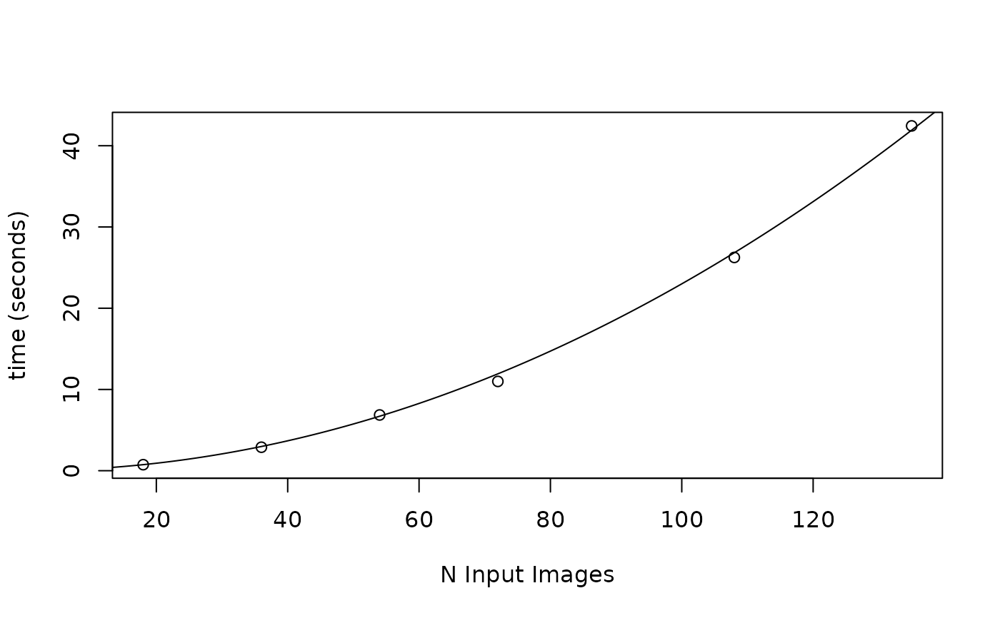

pcv.emd can be used to calculate Earth Mover's Distance between pairwise histograms
in a wide dataframe of multi value traits. The is expected to be used with output from mv_ag.
See also pcv.euc for euclidean distance between histograms.
Usage
pcv.emd(
df,
cols = NULL,
reorder = NULL,
include = reorder,
mat = FALSE,
plot = TRUE,
parallel = getOption("mc.cores", 1),
trait = "trait",
id = "image",
value = "value",
raiseError = TRUE,
method = "emd"
)
pcv.euc(
df,
cols = NULL,
reorder = NULL,
include = reorder,
mat = FALSE,
plot = TRUE,
parallel = getOption("mc.cores", 1),
trait = "trait",
id = "image",
value = "value",
raiseError = TRUE,
method = "euc"
)Arguments
- df
Data frame to use with multi value traits in wide format or long format
- cols
Columns to use. Defaults to NULL in which case all columns are used. Single strings will be used to regex a pattern in column names (see examples). A vector of names, positions, or booleans will also work. For long data this is taken as a regex pattern (or full name) to use in filtering the trait column.
- reorder
Should data be reordered to put similar rows together in the resulting plot? This takes a vector of column names of length 1 or more (see examples).
- include
if a long dataframe is returned then these columns will be added to the dataframe, labelled for i and j (the row positions for compared histograms). If a matrix is returned then this information is stored in the row names. This defaults to reorder.
- mat
Logical, should data be returned as an nrow x nrow matrix or as a long dataframe? By Default this is FALSE and a long dataframe is returned. Both options are comparable in terms of speed, although for large datasets the matrix version may be slightly faster.
- plot
Logical, should a plot be returned? For a matrix this is made with heatmap(), for a dataframe this uses ggplot.
- parallel
Number of cores to use. Defaults to 1 unless the "mc.cores" option is set.
- trait
Column name for long data to identify traits. This defaults to "trait". If this and value are in the column names of the data then it is assumed to be in long format, otherwise it is assumed to be in wide format.
- id
A vector of column names that uniquely identifies observations if the data is in long format. Defaults to "image".
- value
A column name for the values to be drawn from in long data. Defaults to "value".
- raiseError
Logical, should warnings/errors be raised for potentially large output? It is easy to ask for very many comparisons with this function so the goal of this argument is to catch a few of those and give estimates of how much time something may take. If the function is expected to take very long then a warning or an error is raised. If this is set to FALSE then no time estimates are made.
- method
Which method to use (one of "emd" or "euc"). Defaults to "emd".
Value
A dataframe/matrix (if plot=FALSE) or a list with a dataframe/matrix and\ a ggplot (if plot=TRUE). The returned data contains pairwise EMD values.
Examples
set.seed(123)
test <- mvSim(
dists = list(
runif = list(min = 0, max = 100),
rnorm = list(mean = 90, sd = 20)
),
n_samples = 10
)
test$meta1 <- rep(LETTERS[1:3], length.out = nrow(test))
test$meta2 <- rep(LETTERS[4:5], length.out = nrow(test))
x <- pcv.emd(
df = test, cols = "sim", reorder = "group",
include = c("meta1", "meta2"), mat = FALSE,
plot = FALSE, parallel = 1
)
#> Estimated time of calculation is roughly 0.5 seconds using 1 cores in parallel.
head(x)
#> i j emd meta1_i meta2_i meta1_j meta2_j
#> 11 1 1 0.000 B D B D
#> 111 1 1 0.000 B D B D
#> 112 1 2 1.463 B D C E
#> 12 2 1 1.463 C E B D
#> 113 1 3 0.813 B D A D
#> 13 3 1 0.813 A D B D
x2 <- pcv.emd(
df = test, cols = "sim", reorder = "group",
include = c("meta1", "meta2"), mat = FALSE,
plot = FALSE, parallel = 1, method = "euc"
)
#> Estimated time of calculation is roughly 0.5 seconds using 1 cores in parallel.
head(x2)
#> i j euc meta1_i meta2_i meta1_j meta2_j
#> 11 1 1 0.00000000 B D B D
#> 111 1 1 0.00000000 B D B D
#> 112 1 2 0.04901020 B D C E
#> 12 2 1 0.04901020 C E B D
#> 113 1 3 0.04501111 B D A D
#> 13 3 1 0.04501111 A D B D
# \donttest{
tryCatch(
{
library(data.table)
file <- paste0(
"https://media.githubusercontent.com/media/joshqsumner/",
"pcvrTestData/main/pcv4-multi-value-traits.csv"
)
df1 <- read.pcv(file, "wide", reader = "fread")
df1$genotype <- substr(df1$barcode, 3, 5)
df1$genotype <- ifelse(df1$genotype == "002", "B73",
ifelse(df1$genotype == "003", "W605S",
ifelse(df1$genotype == "004", "MM", "Mo17")
)
)
df1$fertilizer <- substr(df1$barcode, 8, 8)
df1$fertilizer <- ifelse(df1$fertilizer == "A", "100",
ifelse(df1$fertilizer == "B", "50", "0")
)
w <- pcv.emd(df1,
cols = "hue_frequencies", reorder = c("fertilizer", "genotype"),
mat = FALSE, plot = TRUE, parallel = 1
)
},
error = function(err) {
message(err)
}
)
#> Error in .emdRaiseError(raiseError, df, parallel, trait = NULL): Stopping, estimated time of calculation is roughly 2.83 hours using 1 cores in parallel.
#> If you wish to proceed then rerun this command with raiseError=FALSE
# Note on computational complexity
# This scales as O^2, see the plot below for some idea
# of the time for different input data sizes.
emdTime <- function(x, n = 1) {
x^2 / n * 0.0023
}
plot(
x = c(18, 36, 54, 72, 108, 135), y = c(0.74, 2.89, 6.86, 10.99, 26.25, 42.44),
xlab = "N Input Images", ylab = "time (seconds)"
) # benchmarked test data
lines(x = 1:150, y = emdTime(1:150)) # exponential function

plot(
x = 1:1000, y = emdTime(1:1000), type = "l",
xlab = "N Input Images", ylab = "time (seconds)"
)
# }